2 Plotting
The function ggplot_dt takes a data table containing two columns named lon and lat that should specify a regular longitude-latitude grid, as well as some data to use for coloring the map.
The naming of the columns is important in that the function will not work if you, for example, name the longitude column long or Lon. An easy example is the following
data("chirps_monthly")
dt = copy(chirps_monthly) # to manipulate the data table: chirps_monthly has locked binding
dt2020 = dt[year == 2020 & month == 10] # reduce the observed precipitation data to a single time slice, namely October 2020
# our data now looks like this:
print(dt2020) ## lon lat prec month year terc_cat
## 1: 22.0 -12.0 2.981750252 10 2020 0
## 2: 22.0 -11.5 3.382063644 10 2020 0
## 3: 22.0 -11.0 3.250394658 10 2020 0
## 4: 22.0 -10.5 3.065396443 10 2020 -1
## 5: 22.0 -10.0 3.416906726 10 2020 -1
## ---
## 3480: 51.5 21.0 0.033333333 10 2020 -1
## 3481: 51.5 21.5 0.033333333 10 2020 0
## 3482: 51.5 22.0 0.032608688 10 2020 -1
## 3483: 51.5 22.5 0.001594238 10 2020 -1
## 3484: 51.5 23.0 0.000000000 10 2020 -1ggplot_dt(dt2020,'prec') # we pass the data table and the name of the column containing the plotting data,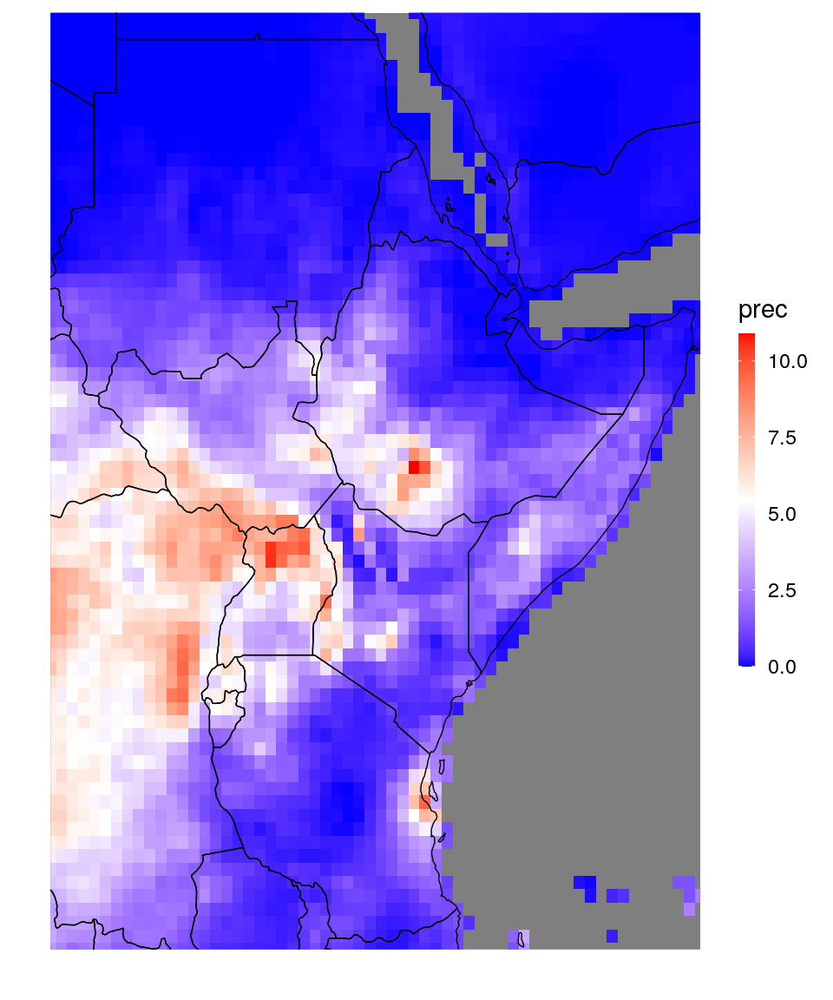
As we can see, the color scale here makes no sense (blue meaning no precipitation) and we’ll talk about that in a second. But let’s start at the base functionality. ggplot_dt requires two arguments, the first one being a data table containing the data, and the second one is the name of the column that contains the data you want to plot. This defaults to the third column in the data table (often your data table will start with lon, lat, and the third column is what you want to plot). So in the example above, ggplot_dt(dt) would have led to the same result, because 'prec' is the third column in dt. The plotting window is determined by the data. If you have data covering the entire earth, the entire earth would be plotted. As a consequence, we can restrict the plotted region by subsetting the data table:
dt_sub = dt2020[lon %between% c(28,43) & lat %between% c(-12,1)] # a region containing Tanzania
ggplot_dt(dt_sub)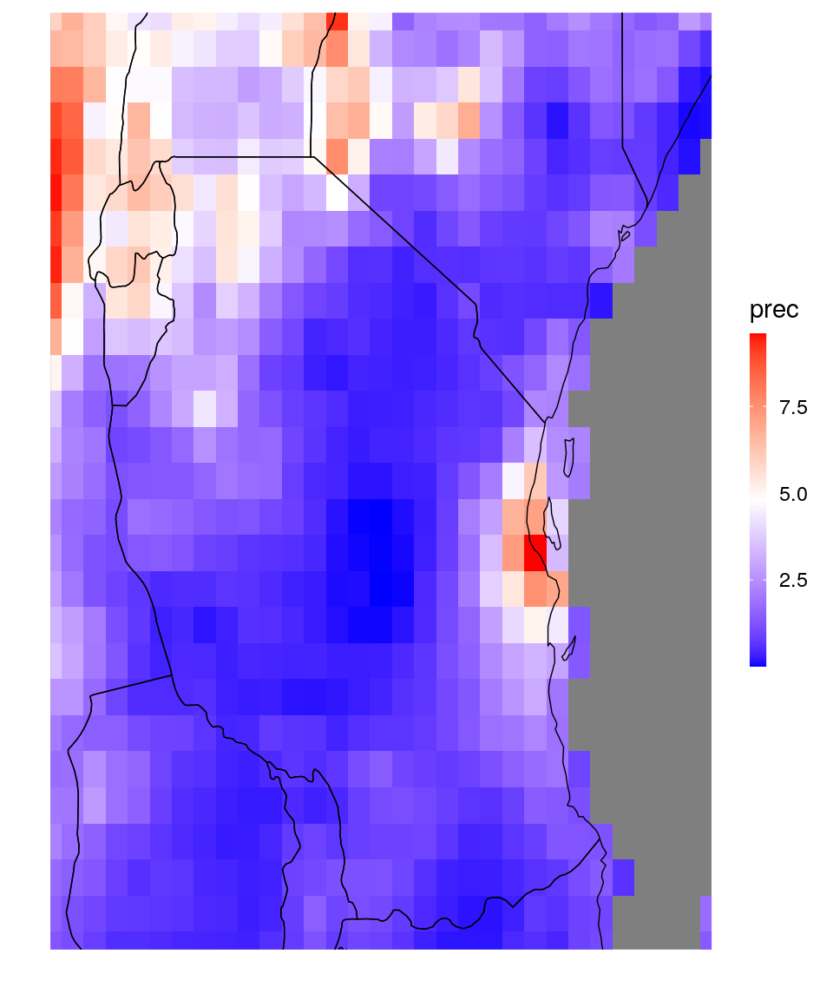
The function has further optional arguments (also recall that you can access the function documentation summarizing all of this by typing ?ggplot_dt):
ggplot_dt(dt_sub,'prec',
mn = 'October 2020 precipitation', # add a title to the plot
rr = c(1,10), # fix the limits of the color scale
name = 'mm/day') # change the legend label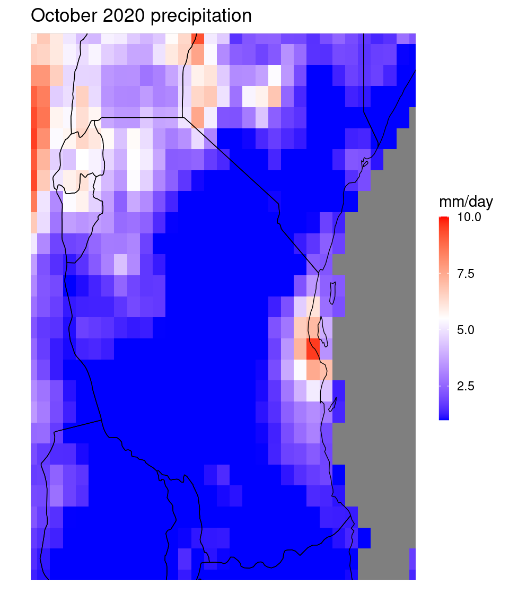
In this example we set the lower limit of the color scale to 1 and the upper limit to 10. By default the data is truncated at the ends of the color scale, so every pixel with precipitation of below 1mm/day is now shown in the same blue color, the color corresponding to a value of 1 mm. Setting the range of the color scale is useful for making several plots comparable or to force symmetry around 0, e.g. when plotting correlations or anomalies:
dt[,clim := mean(prec), by = .(lon,lat,month)] # add a climatology column to dt
dt[,ano := prec - clim] # add an anomaly column to dt
print(dt)## lon lat prec month year terc_cat clim ano
## 1: 22.0 -12.0 1.9301587 10 1981 -1 2.8169255 -0.886766778
## 2: 22.0 -11.5 2.1351602 10 1981 -1 3.0905585 -0.955398264
## 3: 22.0 -11.0 2.7692883 10 1981 -1 3.4675703 -0.698281996
## 4: 22.0 -10.5 3.9201619 10 1981 0 3.8808617 0.039300191
## 5: 22.0 -10.0 4.8720656 10 1981 1 4.2989969 0.573068714
## ---
## 418076: 51.5 21.0 0.2404348 12 2020 -1 0.2559819 -0.015547112
## 418077: 51.5 21.5 0.2184058 12 2020 -1 0.2415870 -0.023181188
## 418078: 51.5 22.0 0.2053623 12 2020 -1 0.2151377 -0.009775418
## 418079: 51.5 22.5 0.1615942 12 2020 -1 0.1870797 -0.025485473
## 418080: 51.5 23.0 0.1387682 12 2020 -1 0.1701314 -0.031363167ggplot_dt(dt[month == 10 & year == 2020], 'ano', rr = c(-3,3))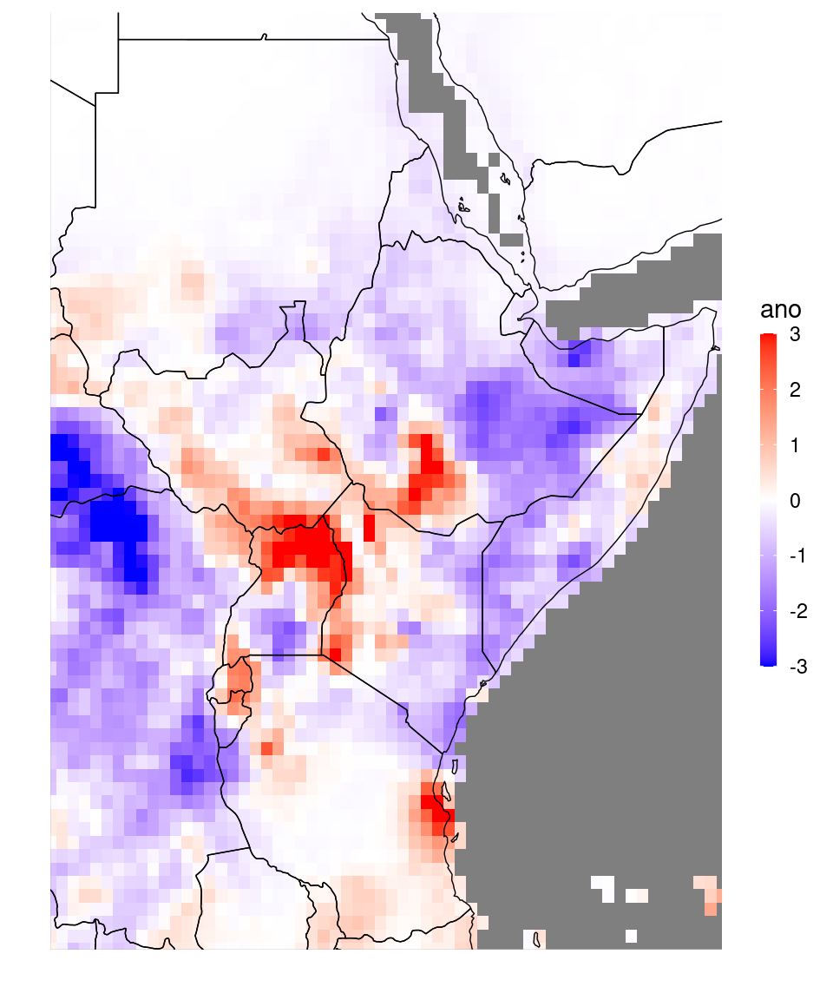
Now, in this plot positive rainfall anomalies are shown red while negative anomalies are blue, which is very unintuitive. The function allows us to specify the three used colors by name with the arguments low,mid, and high. An overview over available color names can be found here. So here’s an anomaly plot looking a bit nicer:
ggplot_dt(dt[month == 10 & year == 2020], 'ano',
mn = 'October 2020 rainfall anomaly',
rr = c(-3,3),
low = 'red', mid = 'white', high = 'darkgreen',
name = 'mm/day')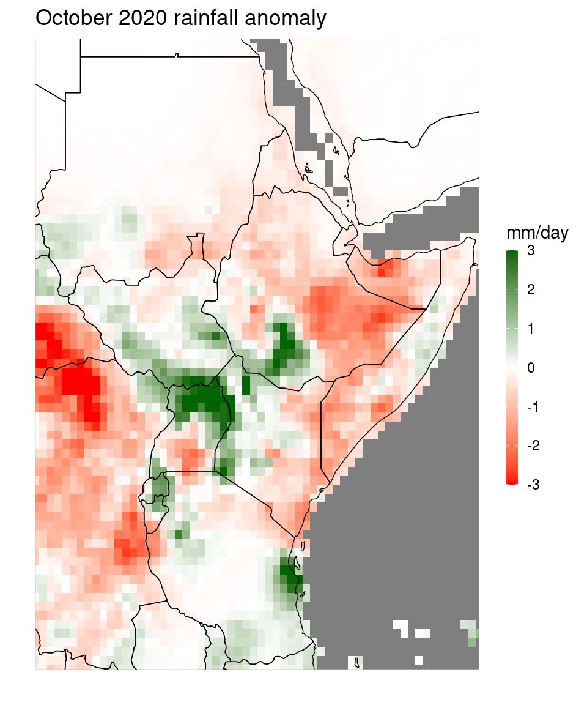
Note that we set the range argument to c(-3,3). Fixing the range mostly makes sense when the range is known (e.g. for correlation plots), or when you want to compare several plots (e.g. for comparing mean square error of different NWP models, all plots should have the same range). If we leave the range argument rr free, the range is determined from the data. However, when we do this for our anomaly plot this has an undesired sideeffect:
ggplot_dt(dt[month == 10 & year == 2020], 'ano',
mn = 'October 2020 rainfall anomaly',
low = 'red', mid = 'white', high = 'darkgreen',
name = 'mm/day')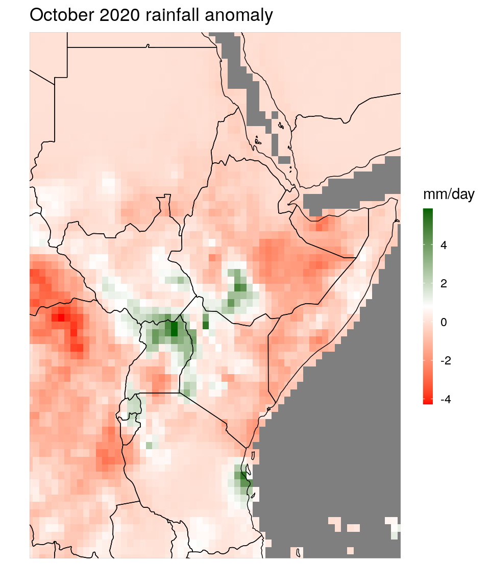
The color scale is no longer centered (white) at 0, but in the center of the (now asymetric) range. As a consequence, all gridpoints with anomaly 0 are shown in a light red. To fix this, we can use the midpoint argument:
ggplot_dt(dt[month == 10 & year == 2020], 'ano',
mn = 'October 2020 rainfall anomaly',
low = 'red', mid = 'white', high = 'darkgreen',
midpoint = 0,
name = 'mm/day')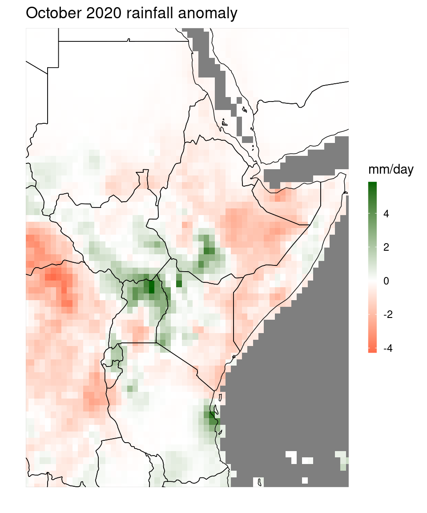
Another, maybe surprising, use for the midpoint argument is that we can generate plots with a colorscale with only two colors. For example, going back to plotting the observed rainfall we can do the following:
ggplot_dt(dt[month == 10 & year == 2020], 'prec',
mn = 'October 2020 rainfall',
mid = 'white', high = 'blue',
midpoint = 0,
name = 'mm/day')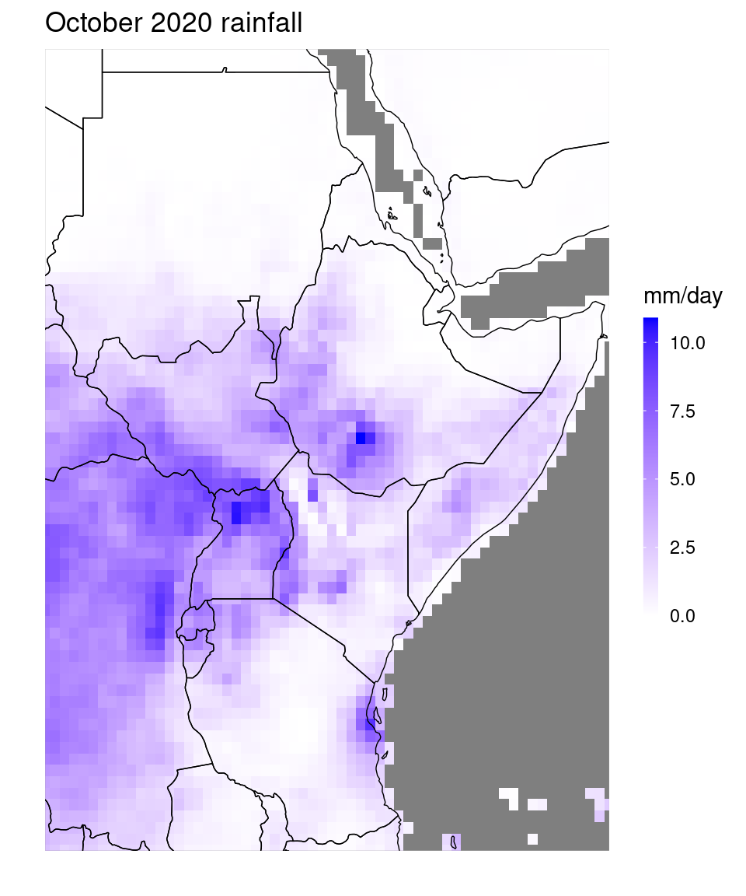
Here, we set the midpoint to 0, which is the minimum of our data (since observed rainfall is never below 0). Consequently, the second half of the colorscale extending below 0 is ignored.
Finally, the function allows to discretize the color scale. To this end the argument discrete_cs should be set to TRUE. We can then control the breaks of the discrete colorscale by one of the arguments binwidth, n.breaks, or breaks (the latter takes a vector containing all breakpoints). Using binwidth is recommended: The argument n.breaks (which is passed to the function ggplot2::scale_fill_steps2) tries to find ‘nice’ breaks and does not work reliably, and breaks is often a bit tedious. To revisit the anomaly plot from above:
ggplot_dt(dt[month == 10 & year == 2020], 'ano',
mn = 'October 2020 rainfall anomaly',
discrete_cs = TRUE, binwidth = 2,
low = 'red', mid = 'white', high = 'darkgreen',
midpoint = 0,
name = 'mm/day')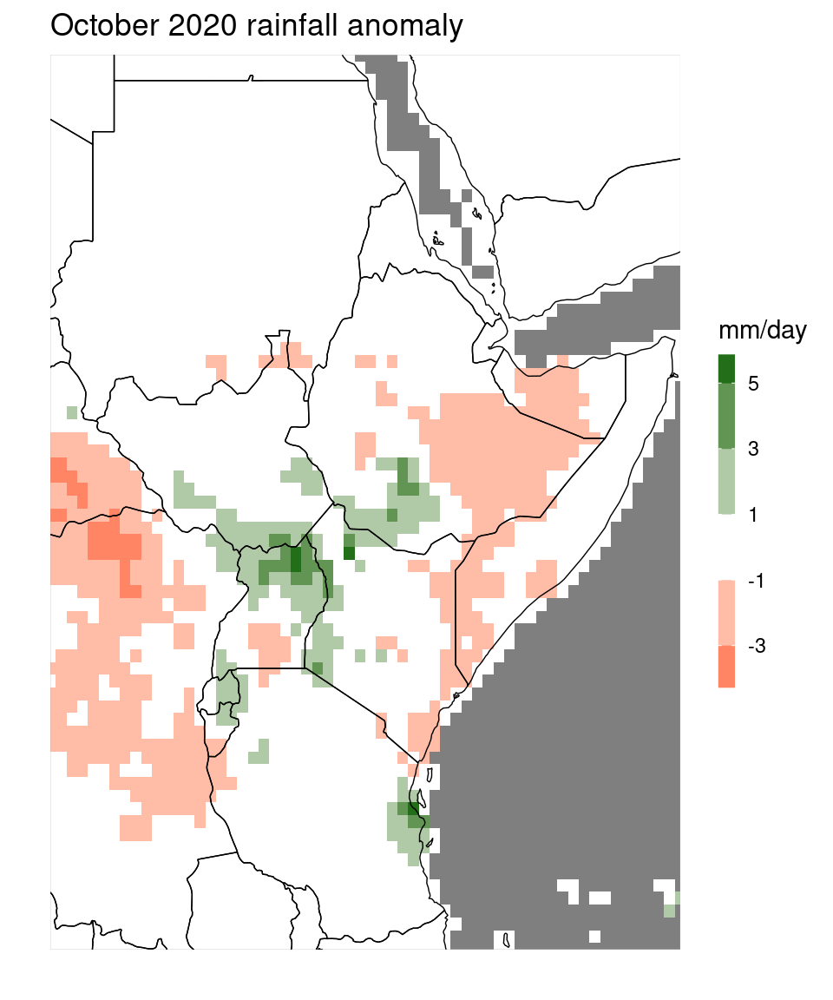
For saving a created plot, we can use any of Rs graphical devices, e.g.
pdf(file = '<path to file and filename>.pdf', width = ...,height = ...)
print(pp)
dev.off()This creates a .pdf file, but you can print .png and some other file formats similarly, see ?Devices for an overview.
One final remark: Often you will deal with data tables that contain spatio-temporal data. It is then important to remember subselecting the particular timeslice you want to view, (October 2020 in the examples above). The function ggplot_dt by default tries to select the first timeslice of tempo-spatial data. This is convenient for a quick first look at your data. Here an example:
print(chirps_monthly) # a data table with multiple months and years and locations, so spatio-temporal data## lon lat prec month year terc_cat
## 1: 22.0 -12.0 1.9301587 10 1981 -1
## 2: 22.0 -11.5 2.1351602 10 1981 -1
## 3: 22.0 -11.0 2.7692883 10 1981 -1
## 4: 22.0 -10.5 3.9201619 10 1981 0
## 5: 22.0 -10.0 4.8720656 10 1981 1
## ---
## 418076: 51.5 21.0 0.2404348 12 2020 -1
## 418077: 51.5 21.5 0.2184058 12 2020 -1
## 418078: 51.5 22.0 0.2053623 12 2020 -1
## 418079: 51.5 22.5 0.1615942 12 2020 -1
## 418080: 51.5 23.0 0.1387682 12 2020 -1ggplot_dt(chirps_monthly) # generates a plot of the precipitation of October 1981 (first timeslice), for a first quick impression of your data. 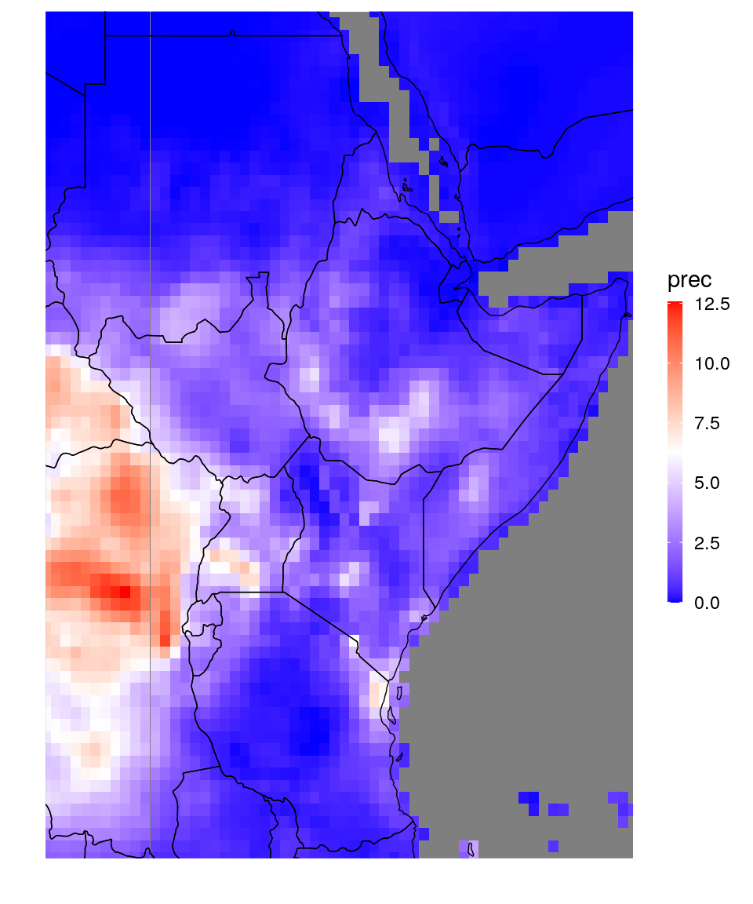
2.1 Plotting values for selected countries
Above, we have already seen an option how to restrict a plot to a particular country: by manually subsetting the data to a rectangle of longitudes and latitudes containing that specific country. This is of course quite tedious, and to make our lives easier we can use the restrict_to_country-function that takes a data table and a country name, and subsets the data table to only contain gridpoints in the specified country. Currently, the function accepts the following country names: Burundi, Eritrea, Ethiopia, Kenya, Rwanda, Somalia, South Sudan, Sudan, Tanzania, Uganda.
dt_new = restrict_to_country(dt[month == 10 & year == 2020],'Kenya')
print(dt_new)## lon lat prec month year terc_cat clim ano
## 1: 34.0 -1.0 4.9593979 10 2020 1 2.964475 1.9949232
## 2: 34.0 -0.5 4.7645891 10 2020 1 3.639693 1.1248956
## 3: 34.0 0.0 4.6154697 10 2020 1 4.284345 0.3311242
## 4: 34.5 -1.0 7.5550100 10 2020 1 4.380272 3.1747380
## 5: 34.5 -0.5 6.4341863 10 2020 1 4.056996 2.3771907
## ---
## 187: 41.0 -1.0 0.7533339 10 2020 -1 2.456691 -1.7033568
## 188: 41.0 3.0 1.1354665 10 2020 0 2.135546 -1.0000791
## 189: 41.0 3.5 1.5012010 10 2020 0 2.191273 -0.6900723
## 190: 41.0 4.0 1.8609376 10 2020 0 2.431412 -0.5704748
## 191: 41.5 3.5 1.3543324 10 2020 0 2.447758 -1.0934261ggplot_dt(dt_new, 'ano',
mn = 'October 2020 rainfall anomaly',
discrete_cs = TRUE, binwidth = 2,
low = 'red', mid = 'white', high = 'darkgreen',
midpoint = 0,
name = 'mm/day')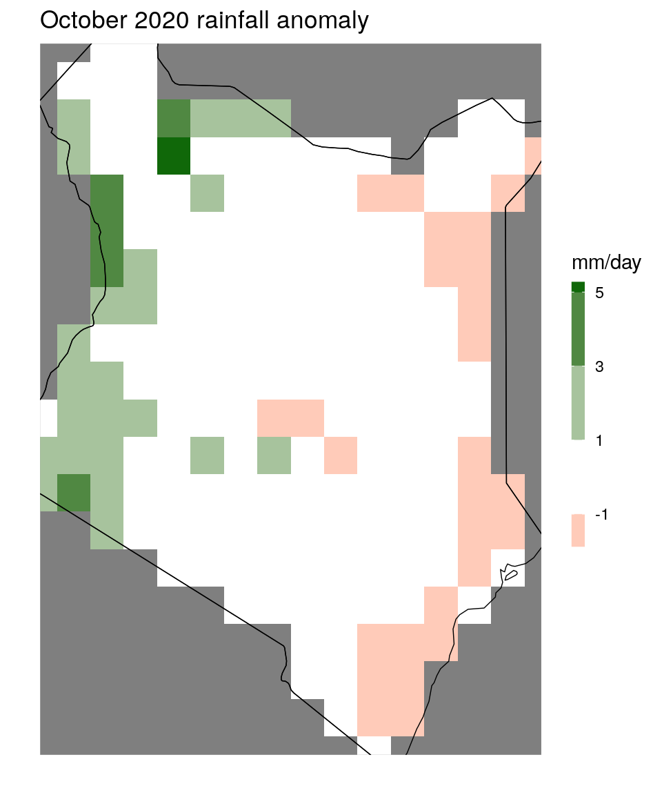
As we can see, the function restricts the data to all gridcells for which the centerpoint lies within the specified country. This is useful, for example, for calculating mean scores for the specified country. However, it is not optimal for plotting, since all grid cells past the border are censored, even though the original data table contained values there. To this end, the restrict_to_country function has a rectangle-argument that you can set to TRUE for plotting:
dt_new = restrict_to_country(dt[month == 10 & year == 2020],'Kenya', rectangle = TRUE)
ggplot_dt(dt_new, 'ano',
mn = 'October 2020 rainfall anomaly',
discrete_cs = TRUE, binwidth = 2,
low = 'red', mid = 'white', high = 'darkgreen',
midpoint = 0,
name = 'mm/day')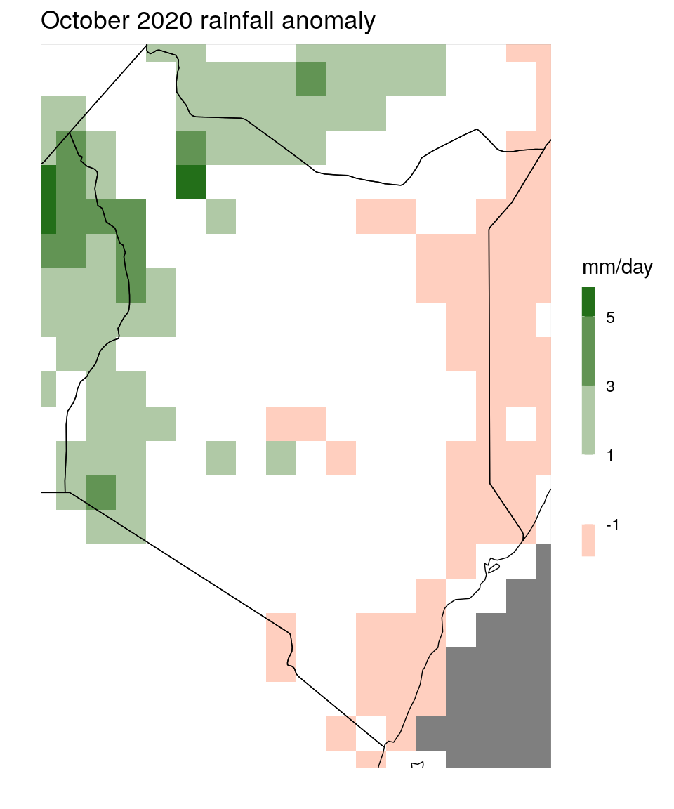
Instead of a single country name, you can also pass multiple country names in a vector to the function. Moreover, when you use rectangle = TRUE, you can specify a tolerance tol in order to widen the plotting window:
dt_new = restrict_to_country(dt[month == 10 & year == 2020],
c('Kenya','Tanzania'),
rectangle = TRUE,tol = 2)
ggplot_dt(dt_new, 'ano',
mn = 'October 2020 rainfall anomaly',
discrete_cs = TRUE, binwidth = 2,
low = 'red', mid = 'white', high = 'darkgreen',
midpoint = 0,
name = 'mm/day')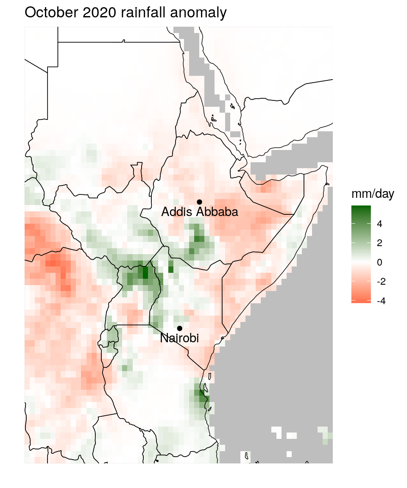
The tol = 2 argument means that the function will include a buffer zone of 2 degrees lon/lat outside the specified countries (i.e. 4 gridpoints to each side). Note that the buffer to the south of Tanzania is smaller, because the original data table dt does not contain any data further south.
2.2 Customized plots
The function ggplot_dt is, as its name suggests, based on the package ggplot2. This is a widely-used package and there are many books and tutorials available for getting familiar with the syntax, e.g. (this one)[https://ggplot2-book.org/]. In ggplot2, plots are composed out of multiple layers, allowing for successive adding of layers. This can help us to generate highly customized plots. As an example, let’s revisit the anomaly plot from above and add the location of Nairobi an Addis Abbaba to it:
library(ggplot2)
# get locations as data table:
loc = data.table(name = c('Addis Abbaba','Nairobi'),lon = c(38.77,36.84),lat = c(9,-1.28))
print(loc)## name lon lat
## 1: Addis Abbaba 38.77 9.00
## 2: Nairobi 36.84 -1.28pp = ggplot_dt(dt[month == 10 & year == 2020], 'ano',
mn = 'October 2020 rainfall anomaly',
low = 'red', mid = 'white', high = 'darkgreen',
midpoint = 0,
name = 'mm/day') +
geom_point(data = loc,mapping = aes(x = lon,y = lat)) +
geom_text(data = loc,mapping = aes(x = lon,y = lat,label = name),vjust = 1.5)
print(pp)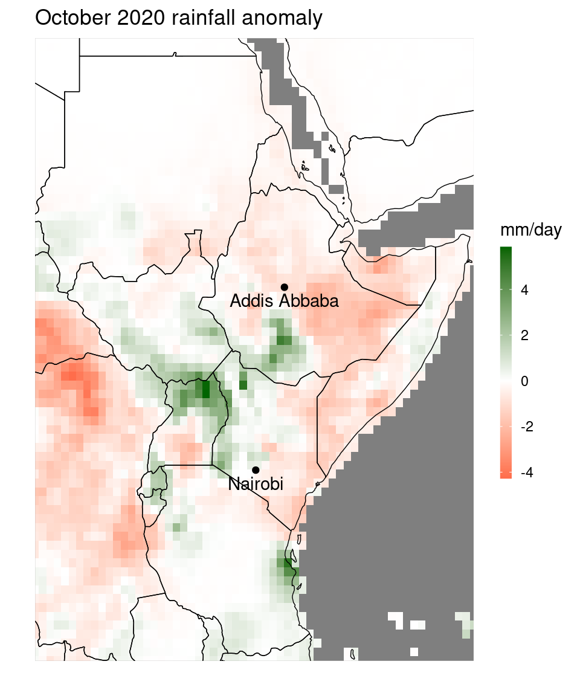
Here, we added two layers to the original plot, the first one being the geom_point-layer that creates the two points at the locations of the cities, and the second being the geom_text-layer that labels the points by the city names.
A frequently required operation is the changing of the font sizes of title and labels. The easiest way to do this is the command
theme_set(theme_bw(base_size = 16)) # defaults to 12
print(pp)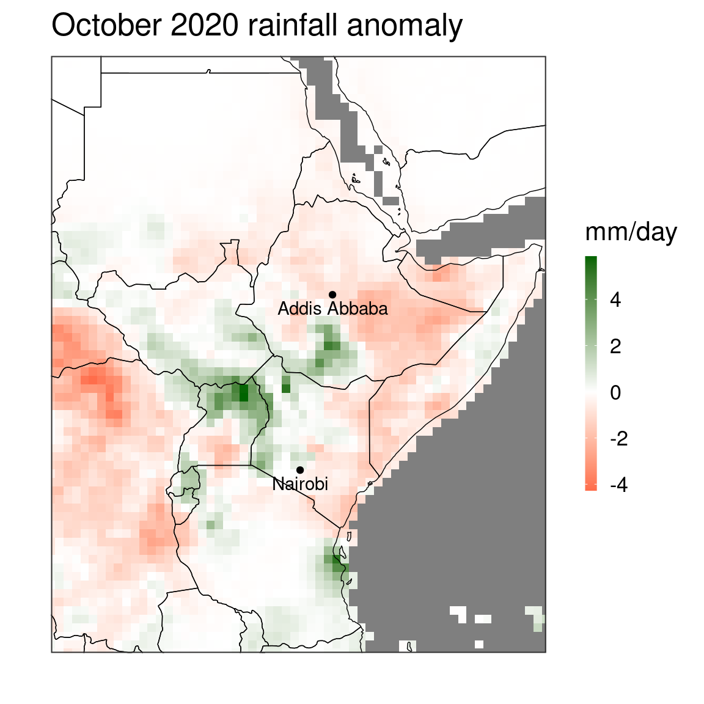
We can also use ggplots adding-layer-syntax to overwrite existing layers, for example if we want a fully customized colorscale:
library(viridis) # the viridis package contains some nice color scales
pp_new = pp + scale_fill_viridis(name = 'my_color_scale',
breaks = seq(-5,5,by = 2),
guide = guide_colorbar(title = 'my personal color scale',
title.position = 'top',
barwidth = 20,
direction = 'horizontal')) +
xlab('lon') + ylab('lat') + # label axis
theme(panel.background = element_rect(fill = 'salmon'), # change background color (used for missing values) to something whackey
axis.ticks = element_line(), # add ticks...
axis.text = element_text(), # ... and labels for the axis, i.e. some lons and lats.
legend.position = 'bottom')
print(pp_new)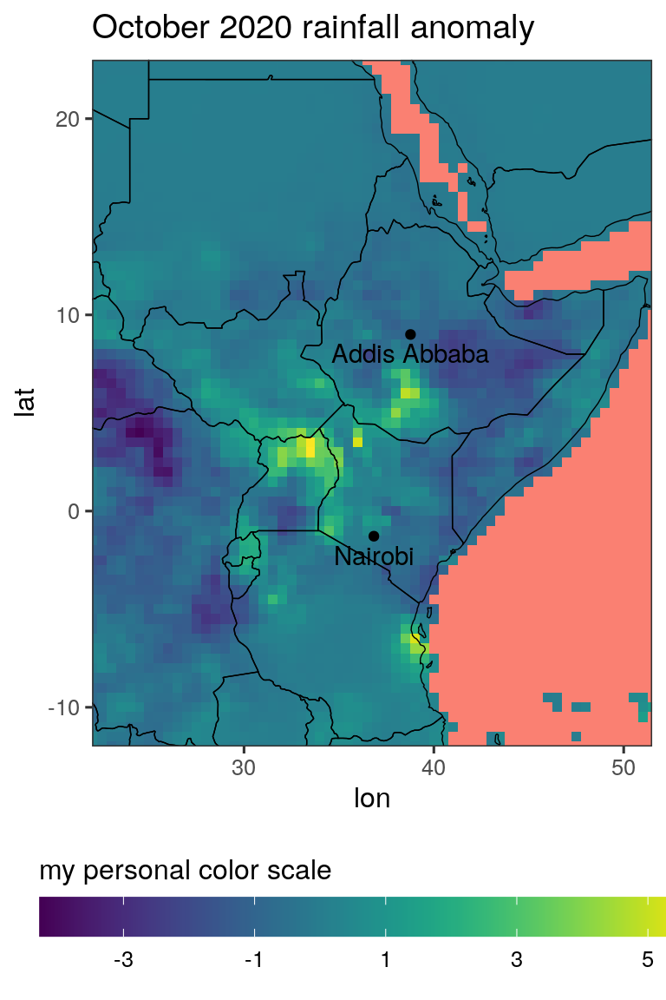
For comparing multiple plots (potentially all of them with the same legend), the function ggpubr::ggarrange is useful:
library(ggpubr)
# compare 2019 October anomaly to 2020 anomaly:
rr = c(-5,5) # force color scale to be identical for the plots
pp1 = ggplot_dt(dt[month == 10 & year == 2019], 'ano',
rr = rr,
mn = 'October 2019 rainfall anomaly',
low = 'red', mid = 'white', high = 'darkgreen',
guide = guide_colorbar(barwidth = 20,barheight = 1,direction = 'horizontal'),
midpoint = 0,
name = 'mm/day') +
geom_point(data = loc,mapping = aes(x = lon,y = lat)) +
geom_text(data = loc,mapping = aes(x = lon,y = lat,label = name),vjust = 1.5)
pp2 = ggplot_dt(dt[month == 10 & year == 2020], 'ano',
rr = rr,
mn = 'October 2020 rainfall anomaly',
low = 'red', mid = 'white', high = 'darkgreen',
midpoint = 0,
name = 'mm/day') +
geom_point(data = loc,mapping = aes(x = lon,y = lat)) +
geom_text(data = loc,mapping = aes(x = lon,y = lat,label = name),vjust = 1.5)
ggarrange(pp1,pp2,ncol = 2,common.legend = TRUE,legend = 'bottom')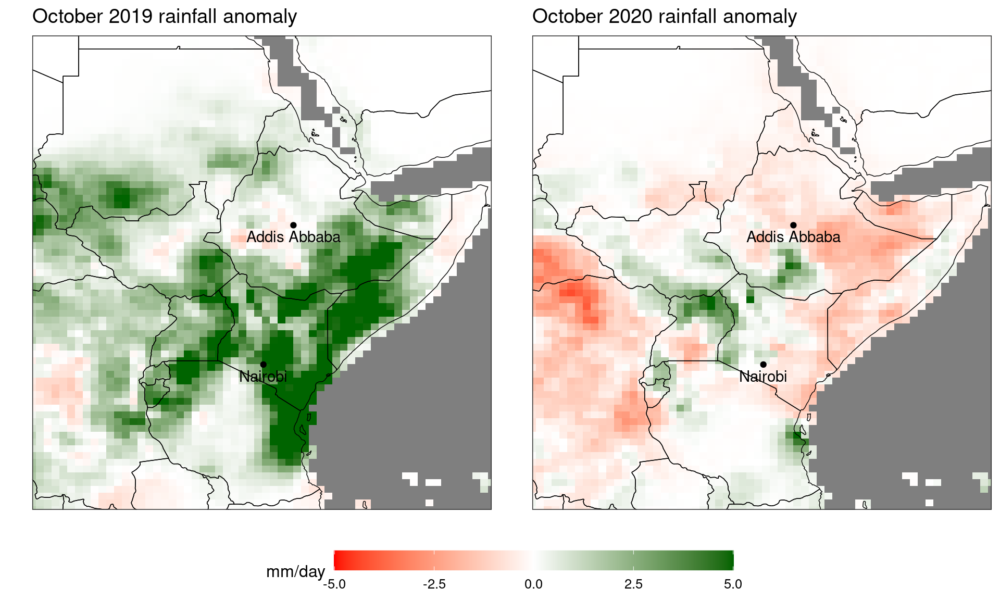